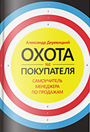

Наши издания

Охота на черного
лебедя
(Stalking the Black Snaw)
"Милые" компании
всегда выигрывают
(Nice Companies Finish First)

Книги и печать книг актуальны всегда. Типография предлагает вам печать книг малыми тиражами . Это очень выгодное предложение, если вы только начали карьеру литератора или просто хотите сделать подарки родным в виде книги собственного сочинение с автографом или напечатать редкую книгу.
Если вам нужен небольшой тираж книг, то мы произведем его с помощью технологии цифровой печати или же с помощью офсетной печати. Типография «Ультрадрук» изготавливает книги малыми тиражами на цифровом оборудовании или на ризографе. Большие тиражи (больше 500 штук) изготавливаются при помощи черно-белого ризографа или офсетного оборудования. Мы предлагаем вам различные переплеты книг: мягкий, твердый или на пружине.
Печать книг малыми тиражами — одна из приоритетных задач нашей типографии. При помощи нашего самого современного оборудования, мы можем напечатать книгу даже в количестве всего одного экземпляра. Такая возможность дает нам огромное преимущество над крупными типографиями, которые используют лишь офсетную печать и тем самым могут изготавливать тиражи лишь от 500 или 1000 экземпляров. Наша типография также может индивидуализировать каждый ваш экземпляр книги или, например, внести персонализацию в каждую книгу.
Мы работаем максимально быстро и можем доставить продукцию в любое удобное для вас место в Киеве. Для того, чтобы убедиться в качестве нашей продукции, позвоните нам и закажите печать одного экземпляра книги по цене тиражного. Отправьте нам макет книги сегодня и уже завтра вы получите готовый экземпляр!
При подсчете стоимости печати книг учитываются такие параметры: тираж, обрезной формат (размер в мм), плотность и сорт бумаги для внутреннего блока и для обложки, цветность печати (CMYK, grayscale и т.д.), виды отделки обложки (ламинация, Уф-лак, офсетный лак, тиснение фольгой) и т.д. Срок изготовления продукции зависит напрямую от величины тиража.